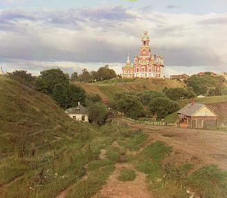
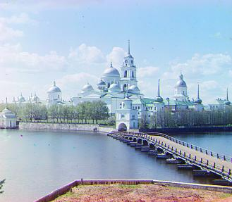
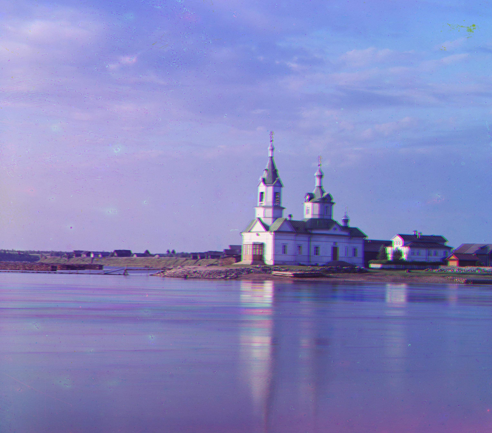
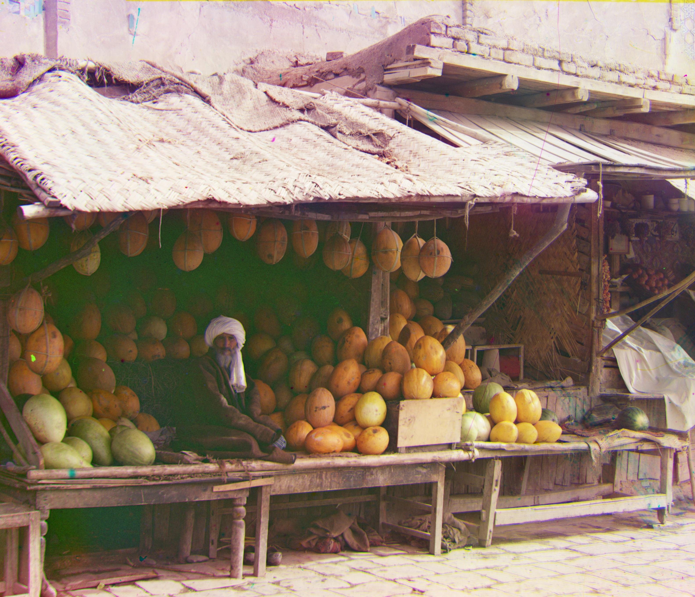
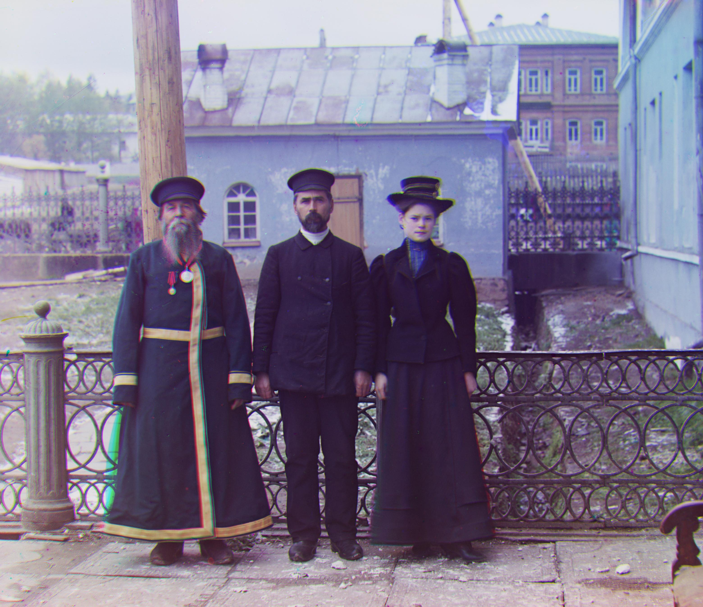
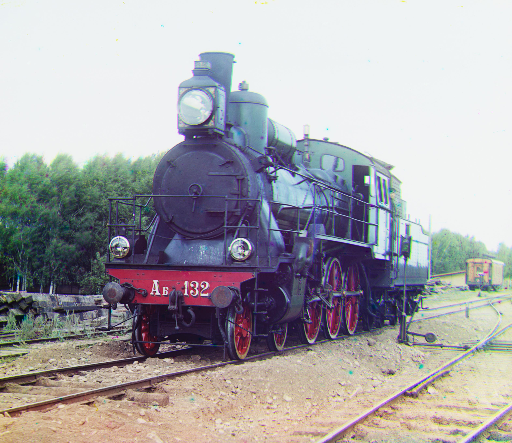
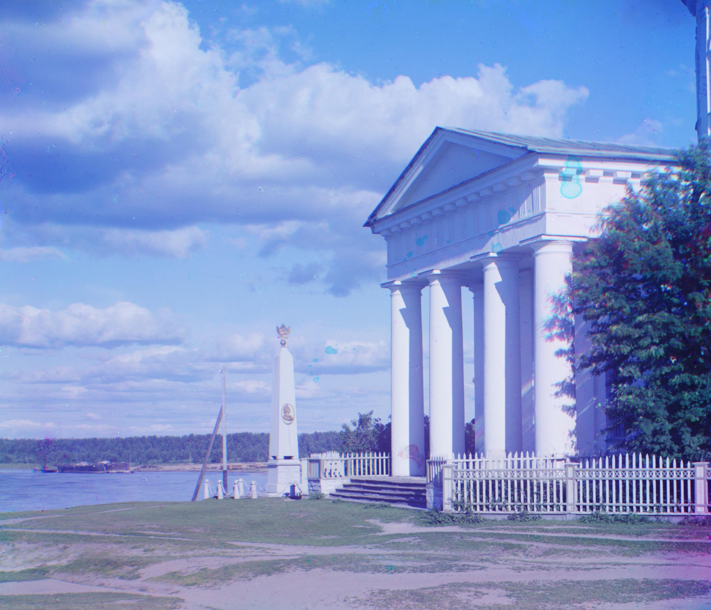

Project 2: Fun with Filters and Frequencies!
Alp Eren Ozdarendeli
Background
In this project, I focused on manipulating image frequencies to achieve various effects. I sharpened images by boosting high-frequency components, created hybrid images by combining high and low frequencies from different images, and blended iamges using Gaussian and Laplacian stacks.
Part 1: Fun with Filter
Part 1.1: Finite Difference Operator
In order to calculate partial derivatives, I used finite difference kernels. Dx kernel is created by np.array([[1, -1]]) and Dy kernel is created bynp.array([[1], [-1]]. By convolving the image with these finite difference kernels, I have obtained the partial derivatives in horizontal and vertical directions. To form the gradient magnitude image, I used scipy.sqrt(dx ** 2 + dy ** 2). In order to binarize the gradient magnitude, I have chosen a threshold of 0.29 per pixel.

d_x

d_y

Gradient Magnitude

Binarized Gradient Magnitude
Project Overview
My approach for small images was to search for possible translations of in the range of [-15, 15] for each dimension. I used normalized mutual information as the metric to evaluate each translation based on their similarity. I used the offset that yielded best normalized mutual information score for alignment.
For larger images, this exhaustive method is very inefficient. Thus, I implemented a pyramid approach that uses my previous alignment function with different range (window) parameters. Basically, the pyramid represents the image at different factors of two. As smallest image, I have made the condition that number of pixels in any dimension does not go below 100. For the smallest image, I use the my alignment function for the offset in range of [-46, 46]. For the recursive calls after the smallest image, I defined the window as follows:
elif i >= 3:
wndw = 3
elif i < 3:
wndw = i +1
scale = 1/2**i
i is the variable for the index based on the largeness of the image, at 0th index, we have the original image. With this refined windows for the recursive calls, the algorithm runs faster and still able to obtain color images with accuracy. After obtaining the final images, I cropped %8 from each side along each dimension for each image to get rid of the border pixels.
Project Overview
My approach for small images was to search for possible translations of in the range of [-15, 15] for each dimension. I used normalized mutual information as the metric to evaluate each translation based on their similarity. I used the offset that yielded best normalized mutual information score for alignment.
For larger images, this exhaustive method is very inefficient. Thus, I implemented a pyramid approach that uses my previous alignment function with different range (window) parameters. Basically, the pyramid represents the image at different factors of two. As smallest image, I have made the condition that number of pixels in any dimension does not go below 100. For the smallest image, I use the my alignment function for the offset in range of [-46, 46]. For the recursive calls after the smallest image, I defined the window as follows:
elif i >= 3:
wndw = 3
elif i < 3:
wndw = i +1
scale = 1/2**i
i is the variable for the index based on the largeness of the image, at 0th index, we have the original image. With this refined windows for the recursive calls, the algorithm runs faster and still able to obtain color images with accuracy. After obtaining the final images, I cropped %8 from each side along each dimension for each image to get rid of the border pixels.
Project Overview
My approach for small images was to search for possible translations of in the range of [-15, 15] for each dimension. I used normalized mutual information as the metric to evaluate each translation based on their similarity. I used the offset that yielded best normalized mutual information score for alignment.
For larger images, this exhaustive method is very inefficient. Thus, I implemented a pyramid approach that uses my previous alignment function with different range (window) parameters. Basically, the pyramid represents the image at different factors of two. As smallest image, I have made the condition that number of pixels in any dimension does not go below 100. For the smallest image, I use the my alignment function for the offset in range of [-46, 46]. For the recursive calls after the smallest image, I defined the window as follows:
elif i >= 3:
wndw = 3
elif i < 3:
wndw = i +1
scale = 1/2**i
i is the variable for the index based on the largeness of the image, at 0th index, we have the original image. With this refined windows for the recursive calls, the algorithm runs faster and still able to obtain color images with accuracy. After obtaining the final images, I cropped %8 from each side along each dimension for each image to get rid of the border pixels.
Project Overview
My approach for small images was to search for possible translations of in the range of [-15, 15] for each dimension. I used normalized mutual information as the metric to evaluate each translation based on their similarity. I used the offset that yielded best normalized mutual information score for alignment.
For larger images, this exhaustive method is very inefficient. Thus, I implemented a pyramid approach that uses my previous alignment function with different range (window) parameters. Basically, the pyramid represents the image at different factors of two. As smallest image, I have made the condition that number of pixels in any dimension does not go below 100. For the smallest image, I use the my alignment function for the offset in range of [-46, 46]. For the recursive calls after the smallest image, I defined the window as follows:
elif i >= 3:
wndw = 3
elif i < 3:
wndw = i +1
scale = 1/2**i
i is the variable for the index based on the largeness of the image, at 0th index, we have the original image. With this refined windows for the recursive calls, the algorithm runs faster and still able to obtain color images with accuracy. After obtaining the final images, I cropped %8 from each side along each dimension for each image to get rid of the border pixels.
Project Overview
My approach for small images was to search for possible translations of in the range of [-15, 15] for each dimension. I used normalized mutual information as the metric to evaluate each translation based on their similarity. I used the offset that yielded best normalized mutual information score for alignment.
For larger images, this exhaustive method is very inefficient. Thus, I implemented a pyramid approach that uses my previous alignment function with different range (window) parameters. Basically, the pyramid represents the image at different factors of two. As smallest image, I have made the condition that number of pixels in any dimension does not go below 100. For the smallest image, I use the my alignment function for the offset in range of [-46, 46]. For the recursive calls after the smallest image, I defined the window as follows:
elif i >= 3:
wndw = 3
elif i < 3:
wndw = i +1
scale = 1/2**i
i is the variable for the index based on the largeness of the image, at 0th index, we have the original image. With this refined windows for the recursive calls, the algorithm runs faster and still able to obtain color images with accuracy. After obtaining the final images, I cropped %8 from each side along each dimension for each image to get rid of the border pixels.
Images

cathedral.jpg gshift: [5, 2] rshift: [12, 3]

monastery.jpg gshift: [-3, 2] rshift: [3, 2]
![tobolsk.jpg - gshift: [3, 2] rshift: [6, 3]](images/tobolsk_output.jpg)
tobolsk.jpg gshift: [3, 2] rshift: [6, 3]
![icon.jpg - gshift: [40, 16] rshift: [90, 22]](images/icon_output.jpg)
icon.jpg gshift: [40, 16] rshift: [90, 22]
![harvesters.jpg - gshift: [59, 15] rshift: [124, 12]](images/harvesters_output.jpg)
harvesters.jpg gshift: [59, 15] rshift: [124, 12]
![emir_output.jpg - gshift: [49, 22] rshift: [106, 40]](images/emir_output.jpg)
emir.jpg gshift: [49, 22] rshift: [106, 40]

church.jpg gshift: [24, -6] rshift: [55, -7]
![lady_output.jpg - gshift: [56, 6] rshift: [115, 11]](images/lady_output.jpg)
lady.jpg gshift: [56, 6] rshift: [115, 11]

melons.jpg gshift: [81, 9] rshift: [178, 12]
![onion_church_output.jpg - gshift: [52, 24] rshift: [108, 35]](images/onion_church_output.jpg)
onion_church.jpg gshift: [52, 24] rshift: [108, 35]
![sculpture_output.jpg - gshift: [33, -12] rshift: [140, -27]](images/sculpture_output.jpg)
sculpture.jpg gshift: [33, -12] rshift: [140, -27]
![self_portrait_output.jpg - gshift: [78, 28] rshift: [176, 36]](images/self_portrait_output.jpg)
self_portrait.jpg gshift: [78, 28] rshift: [176, 36]

three_generations.jpg gshift: [53, 14] rshift: [112, 10]

train.jpg gshift: [42, 0] rshift: [86, 30]
![religious_portrait.jpg (my choosing from collection) - gshift: [29, 4] rshift: [69, 6]](images/religious_portrait.jpg)
religious_portrait.jpg (my choosing from collection) gshift: [29, 4] rshift: [69, 6]

landscape.jpg (my choosing from collection) gshift: [14, 26] rshift: [84, 50]
![napoleon.jpg (my choosing from collection) - gshift: [64, 4] rshift: [132, -2]](images/napoleon.jpg)
napoleon.jpg (my choosing from collection) gshift: [64, 4] rshift: [132, -2]